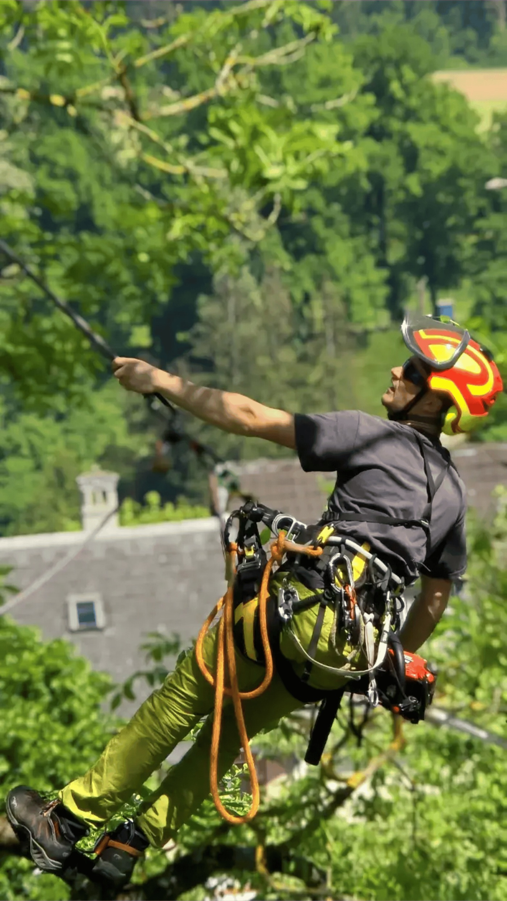
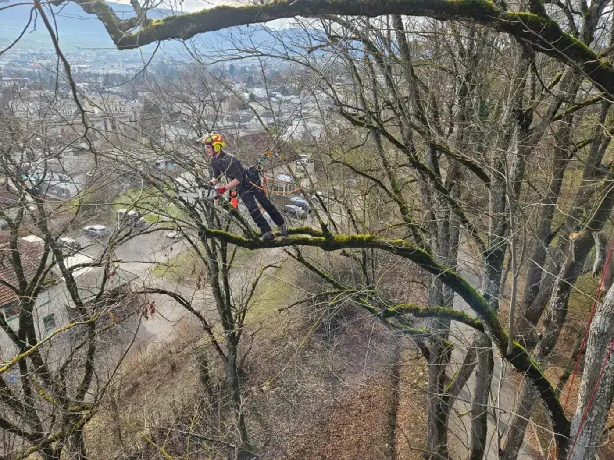
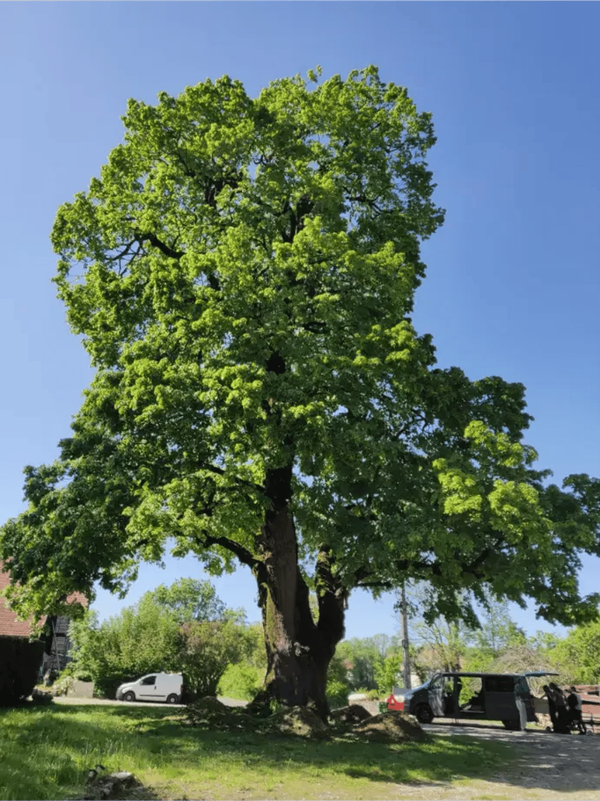
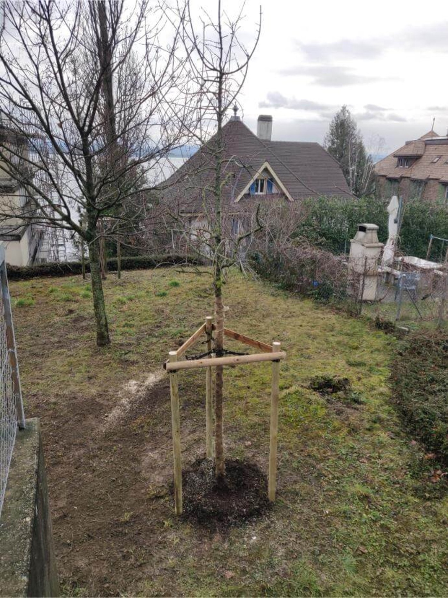

Votre arboriste-grimpeur pour tous les soins de vos arbres
Taille, élagage, abattage, démontage, diagnostic, plantation : Arboritaille prend soin de vos arbres avec les techniques de grimpe, les moyens adaptés à chaque situation et le respect du vivant. Pour les particuliers, les entreprises et les collectivités.
- Devis gratuit et sans engagement
- Réponse sous 48 h ouvrées
- Un seul interlocuteur, du conseil au chantier
- Chantier propre, branches évacuées
Recevez votre devis gratuit
Dites-nous ce dont votre arbre a besoin. Nous vous rappelons pour fixer une visite.
Tout ce dont un arbre a besoin, de la plantation à l'abattage
Un seul spécialiste pour l'ensemble de la vie de vos arbres. Nous vous conseillons la bonne intervention, au bon moment.
Taille et entretien
Taille d'entretien, réduction ou rehaussement de couronne, suppression du bois mort. Une taille raisonnée qui respecte la forme et la santé de l'arbre. En savoir plus
Abattage et démontage
Abattage classique, démontage à la corde ou par rétention en zone contrainte, levage à la grue. Y compris près des bâtiments. En savoir plus
Diagnostic et expertise
Analyse de la vigueur, des défauts mécaniques et des pathologies. Un avis clair pour décider : conserver, soigner ou abattre.
Plantation
Choix de l'essence adaptée au lieu, plantation dans les règles et tuteurage tripode pour une bonne reprise.
Haubanage
Consolidation d'une fourche ou d'une charpentière fragile par haubanage dynamique ou statique, pour conserver l'arbre en sécurité.
Rognage de souche
Élimination des souches sous le niveau du sol pour replanter, engazonner ou construire sans obstacle.
Particuliers, entreprises, collectivités : le même soin, adapté à vos enjeux
Que vous ayez un arbre dans votre jardin ou un parc d'arbres à gérer, vous avez le même besoin : un professionnel qui vous conseille selon votre situation.
Particuliers
Entretien de vos arbres de jardin, mise en sécurité, abattage d'un sujet gênant. Devis gratuit et conseils personnalisés.
Entreprises
Un arbre gêne votre chantier ou nécessite des soins ? Nous évaluons rapidement et intervenons dans les meilleurs délais.
Collectivités
Suivi de groupes d'arbres, gestion des sujets dangereux, projets de plantation. Un partenaire pour l'entretien arboricole communal.
Gérances et régies
Entretien régulier du patrimoine arboré de vos immeubles, avec un interlocuteur unique et des devis clairs.

La passion du métier, le respect du vivant
Chaque arbre est un cas particulier. Avant d'intervenir, nous prenons le temps de le comprendre : son essence, sa vigueur, son environnement et ce que vous en attendez.
- Un conseil sur mesureL'objectif est d'embellir et de conserver les arbres. Chaque situation est différente, parfois l'abattage est nécessaire. Nous sommes là pour vous conseiller.
- Les bons moyens pour chaque arbreGrimpe à la corde par défaut, pour préserver votre jardin. Nacelle, grue ou autres machines quand la situation l'exige, et hélicoptère dans les cas exceptionnels.
- Des coupes propres et raisonnéesTaille raisonnée et respect de la physiologie de l'arbre pour un résultat durable.
- Un chantier rendu propreBranches broyées ou évacuées, bois débité si vous le souhaitez, terrain nettoyé.
Quatre étapes, du premier contact au terrain propre
Vous nous contactez
Par le formulaire ou par téléphone. Quelques mots sur votre arbre suffisent.
Visite et diagnostic
Nous venons voir l'arbre, écoutons vos attentes et vous conseillons la bonne intervention.
Devis clair et gratuit
Un devis écrit et détaillé. Vous décidez librement.
Intervention et nettoyage
Nous intervenons à la date convenue et laissons votre terrain propre.
Nos interventions






Jura, Neuchâtel et Berne
Basés à Courgenay, en Ajoie, nous intervenons chez les particuliers, les entreprises et les collectivités dans une grande partie de la Suisse romande.
Canton du Jura
- Porrentruy
- Delémont
- Courgenay
- Alle
- Bassecourt
- Courrendlin
- Moutier
- Saignelégier
- Le Noirmont
- Toute l'Ajoie
Canton de Neuchâtel
- Neuchâtel
- La Chaux-de-Fonds
- Le Locle
- Val-de-Ruz
- Val-de-Travers
- Boudry
- Littoral
Berne
- Bienne
- Tavannes
- Saint-Imier
- Tramelan
- Reconvilier
- La Neuveville
Ce que nos clients nous demandent
Comment savoir si mon arbre a besoin d'une intervention ?
Bois mort dans la couronne, branches qui touchent une toiture, champignons au pied, tronc penché ou fissuré, feuillage clairsemé : autant de signes à ne pas ignorer. Une visite gratuite permet de trancher.
Combien coûtent vos prestations ?
Chaque arbre est différent : hauteur, essence, accès, type d'intervention et évacuation du bois font varier le prix. C'est pourquoi nous nous déplaçons gratuitement pour établir un devis écrit et précis.
Faut-il une autorisation pour tailler ou abattre un arbre ?
Une taille d'entretien ne nécessite en général aucune démarche. L'abattage, ou une intervention sur un arbre protégé, peut être soumis à autorisation communale. Nous vous guidons dans la démarche.
Mon arbre est difficile d'accès. Est-ce un problème ?
Non. Nous travaillons en grimpe, à la corde, ce qui permet d'accéder aux jardins clos, terrains en pente et cours intérieures. Quand c'est nécessaire, nous mobilisons une nacelle, une grue ou d'autres machines, et dans des cas très particuliers un hélicoptère.
Dans quelle zone intervenez-vous ?
Dans tout le canton du Jura, le canton de Neuchâtel et Berne.
Travaillez-vous avec les entreprises et les communes ?
Oui. Nous accompagnons les entreprises sur leurs chantiers et les collectivités pour la gestion de leur patrimoine arboré : suivi, sécurité, plantations.
Un doute sur un arbre ? Demandez l'avis d'un professionnel.
Visite et devis gratuits, sans engagement. Nous vous répondons sous 48 h ouvrées.